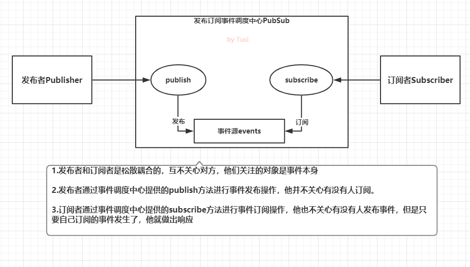
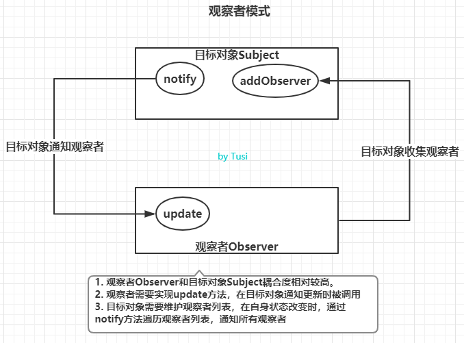
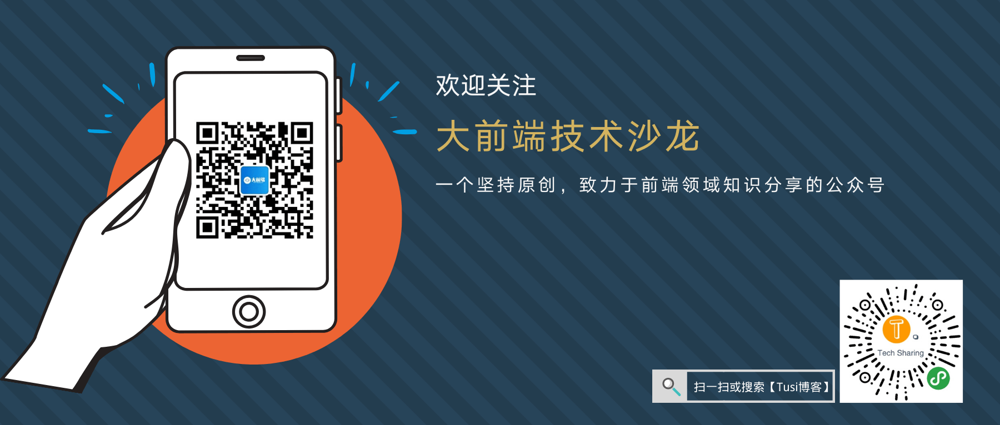

今天的话题是javascript中常被提及的「发布订阅模式和观察者模式」，提到这，我不由得想起了一次面试。记得在去年的一次求职面试过程中，面试官问我，“你在项目中是怎么处理非父子组件之间的通信的？”。我答道，“有用到vuex，有的场景也会用EventEmitter2”。面试官继续问，“那你能手写代码，实现一个简单的EventEmitter吗？”
我犹豫了一会儿，想到使用EventEmitter2时，主要是用emit发事件，用on监听事件，还有off销毁事件监听者，removeAllListeners销毁指定事件的所有监听者，还有once之类的方法。考虑到时间关系，我想着就先实现发事件，监听事件，移除监听者这几个功能。当时可能有点紧张，不过有惊无险，在面试官给了一点提示后，顺利地写出来了！现在把这部分代码也记下来。
class EventEmitter {
constructor() {
// 维护事件及监听者
this.listeners = {}
}
/**
* 注册事件监听者
* @param {String} type 事件类型
* @param {Function} cb 回调函数
*/
on(type, cb) {
if (!this.listeners[type]) {
this.listeners[type] = []
}
this.listeners[type].push(cb)
}
/**
* 发布事件
* @param {String} type 事件类型
* @param {...any} args 参数列表，把emit传递的参数赋给回调函数
*/
emit(type, ...args) {
if (this.listeners[type]) {
this.listeners[type].forEach(cb => {
cb(...args)
})
}
}
/**
* 移除某个事件的一个监听者
* @param {String} type 事件类型
* @param {Function} cb 回调函数
*/
off(type, cb) {
if (this.listeners[type]) {
const targetIndex = this.listeners[type].findIndex(item => item === cb)
if (targetIndex !== -1) {
this.listeners[type].splice(targetIndex, 1)
}
if (this.listeners[type].length === 0) {
delete this.listeners[type]
}
}
}
/**
* 移除某个事件的所有监听者
* @param {String} type 事件类型
*/
offAll(type) {
if (this.listeners[type]) {
delete this.listeners[type]
}
}
}
// 创建事件管理器实例
const ee = new EventEmitter()
// 注册一个chifan事件监听者
ee.on('chifan', function() { console.log('吃饭了，我们走！') })
// 发布事件chifan
ee.emit('chifan')
// 也可以emit传递参数
ee.on('chifan', function(address, food) { console.log(`吃饭了，我们去${address}吃${food}！`) })
ee.emit('chifan', '三食堂', '铁板饭') // 此时会打印两条信息，因为前面注册了两个chifan事件的监听者
// 测试移除事件监听
const toBeRemovedListener = function() { console.log('我是一个可以被移除的监听者') }
ee.on('testoff', toBeRemovedListener)
ee.emit('testoff')
ee.off('testoff', toBeRemovedListener)
ee.emit('testoff') // 此时事件监听已经被移除，不会再有console.log打印出来了
// 测试移除chifan的所有事件监听
ee.offAll('chifan')
console.log(ee) // 此时可以看到ee.listeners已经变成空对象了，再emit发送chifan事件也不会有反应了有了这个自己写的简单版本的EventEmitter，我们就不用依赖第三方库啦。对了，vue也可以帮我们做这样的事情。
const ee = new Vue();
ee.$on('chifan', function(address, food) { console.log(`吃饭了，我们去${address}吃${food}！`) })
ee.$emit('chifan', '三食堂', '铁板饭')所以我们可以单独new一个Vue的实例，作为事件管理器导出给外部使用。想测试的朋友可以直接打开vue官网，在控制台试试，也可以在自己的vue项目中实践下哦。
其实仔细看看，EventEmitter就是一个典型的发布订阅模式，实现了事件调度中心。发布订阅模式中，包含发布者，事件调度中心，订阅者三个角色。我们刚刚实现的EventEmitter的一个实例ee就是一个事件调度中心，发布者和订阅者是松散耦合的，互不关心对方是否存在，他们关注的是事件本身。发布者借用事件调度中心提供的emit方法发布事件，而订阅者则通过on进行订阅。
如果还不是很清楚的话，我们把代码换下单词，是不是变得容易理解一点呢？
class PubSub {
constructor() {
// 维护事件及订阅行为
this.events = {}
}
/**
* 注册事件订阅行为
* @param {String} type 事件类型
* @param {Function} cb 回调函数
*/
subscribe(type, cb) {
if (!this.events[type]) {
this.events[type] = []
}
this.events[type].push(cb)
}
/**
* 发布事件
* @param {String} type 事件类型
* @param {...any} args 参数列表
*/
publish(type, ...args) {
if (this.events[type]) {
this.events[type].forEach(cb => {
cb(...args)
})
}
}
/**
* 移除某个事件的一个订阅行为
* @param {String} type 事件类型
* @param {Function} cb 回调函数
*/
unsubscribe(type, cb) {
if (this.events[type]) {
const targetIndex = this.events[type].findIndex(item => item === cb)
if (targetIndex !== -1) {
this.events[type].splice(targetIndex, 1)
}
if (this.events[type].length === 0) {
delete this.events[type]
}
}
}
/**
* 移除某个事件的所有订阅行为
* @param {String} type 事件类型
*/
unsubscribeAll(type) {
if (this.events[type]) {
delete this.events[type]
}
}
}最后，我们画个图加深下理解：

Publisher和订阅者Subscriber没有特殊的约束，他们好似是匿名活动，借助事件调度中心提供的接口发布和订阅事件，互不了解对方是谁。DOM事件中的dispatchEvent和addEventListener。观察者模式与发布订阅模式相比，耦合度更高，通常用来实现一些响应式的效果。在观察者模式中，只有两个主体，分别是目标对象Subject，观察者Observer。
Observer要实现update方法，供目标对象调用。update方法中可以执行自定义的业务代码。Subject也通常被叫做被观察者或主题，它的职能很单一，可以理解为，它只管理一种事件。Subject需要维护自身的观察者数组observerList，当自身发生变化时，通过调用自身的notify方法，依次通知每一个观察者执行update方法。按照这种定义，我们可以实现一个简单版本的观察者模式。
// 观察者
class Observer {
/**
* 构造器
* @param {Function} cb 回调函数，收到目标对象通知时执行
*/
constructor(cb){
if (typeof cb === 'function') {
this.cb = cb
} else {
throw new Error('Observer构造器必须传入函数类型！')
}
}
/**
* 被目标对象通知时执行
*/
update() {
this.cb()
}
}
// 目标对象
class Subject {
constructor() {
// 维护观察者列表
this.observerList = []
}
/**
* 添加一个观察者
* @param {Observer} observer Observer实例
*/
addObserver(observer) {
this.observerList.push(observer)
}
/**
* 通知所有的观察者
*/
notify() {
this.observerList.forEach(observer => {
observer.update()
})
}
}
const observerCallback = function() {
console.log('我被通知了')
}
const observer = new Observer(observerCallback)
const subject = new Subject();
subject.addObserver(observer);
subject.notify();最后也整张图理解下观察者模式：

Subject和观察者Observer都要实现约定的成员方法。我还没体会到，这里不做评价
关于这个话题，网上文章挺多的，观点上可能也有诸多分歧。重复造轮子，纯属帮助自己加深理解。
本人水平有限，以上仅是个人观点，如有错误之处，还请斧正！如果能帮到您理解发布订阅模式和观察者模式，非常荣幸！
如果有兴趣看看我这糟糕的代码，请点击github，祝大家生活愉快！
